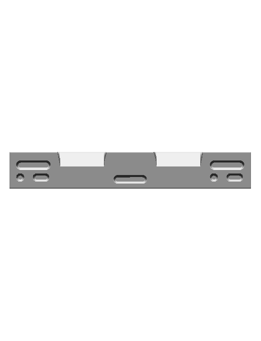
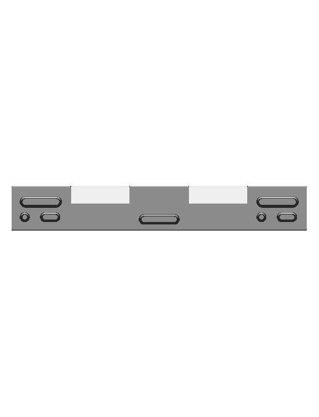
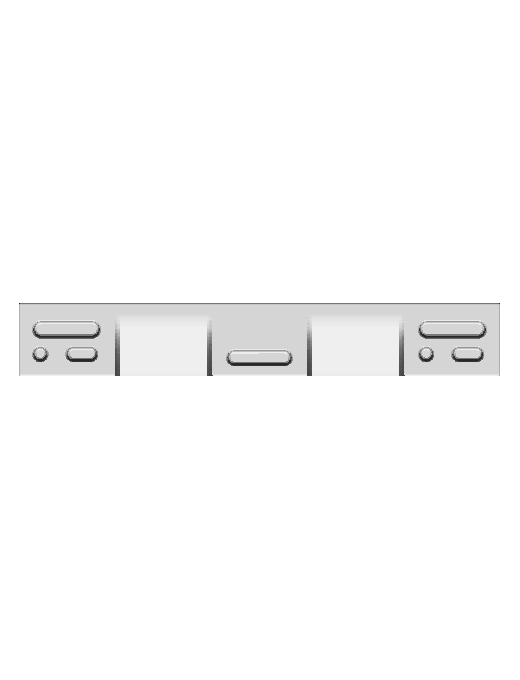
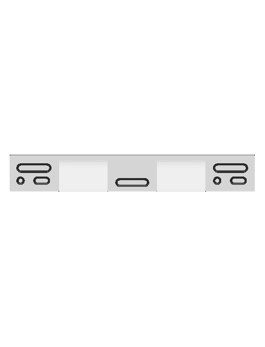
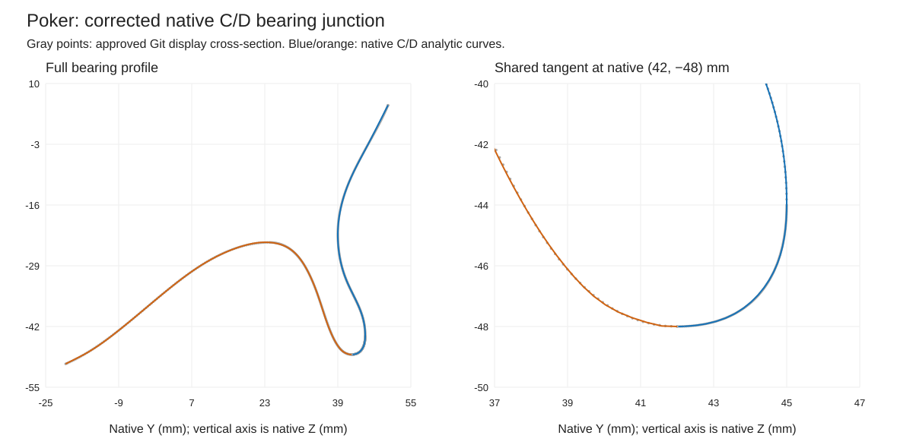

Native 660 × 100 × 100 mm beam with four distinct faces, 28 pocket cavities and six broad sloper forms. All 34 contact identities are retained.
Prior committed asset d0e4e95191e4a76822815bb4eeef3a32caa6fea0 and native CAD. Human app review is separate.
| Prior committed asset | Native CAD |
|---|---|
front | front |
side | side |
top | top |
The final solid is Cut33. Deliberately authored Sketcher profiles and native loft/cut operations preserve the maker pocket inventory and unequal front/back grip depths. Six operator-selected lip/floor stations use depth-fraction/inset pairs (0,0), (0.04,0.8), (0.12,1.8), (0.70,2.5), (0.92,4), (1,6) millimeters, supported by the retained Git section and reviewed primary photographs. Broad sloper sections are native analytic curves, rather than a guessed scalar depth. The published 100 mm dimension for the face-C shallow half-round features denotes diameter, not grip depth: the unsupported depth value is omitted with the authorized metadata correction in metadata-correction.json. No cord is present.
Independent review identified a sharp intersection in the first CAD publication. Both native profiles now stop at their measured shared endpoint with a common horizontal tangent. The native mesh probe measures 2.75 degrees across the contact boundary; the existing limit remains 5 degrees. Gray points below come from the approved Git cross-section; blue and orange curves are the corrected native profiles.
